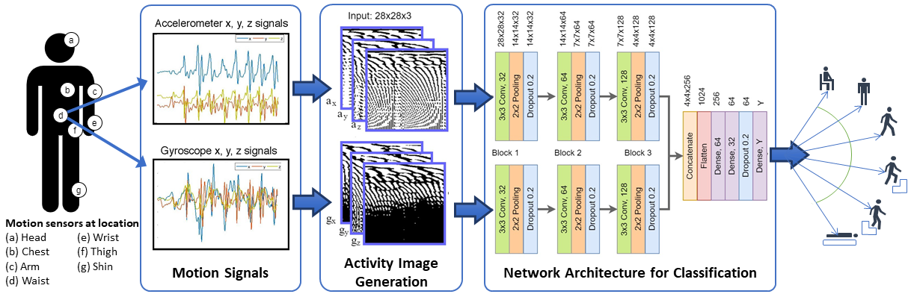
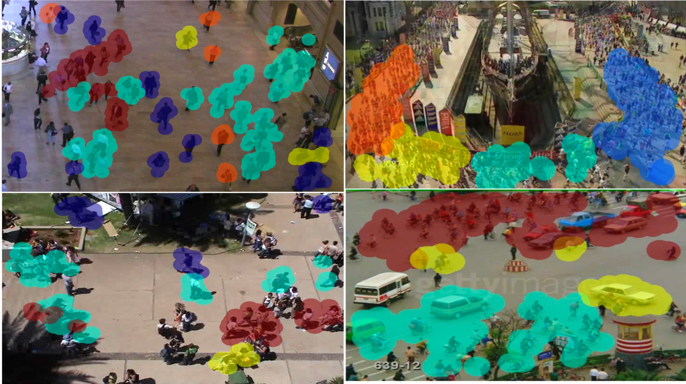
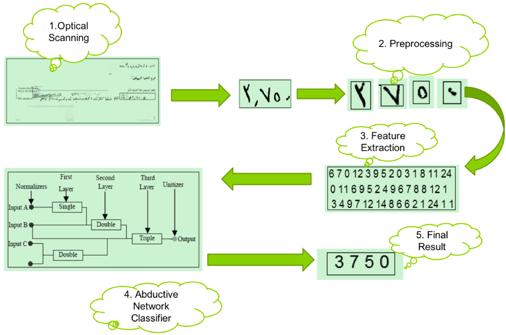
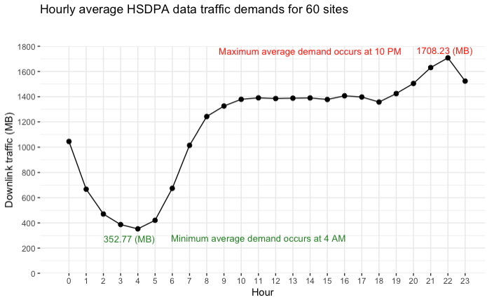
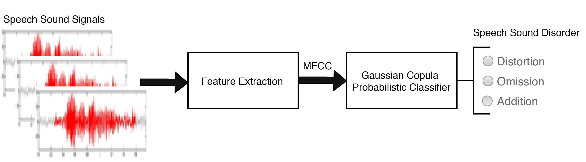

Research Interest
Data forecasting and analysis, Video Data Analytics, Human activity recognition, Text and speech recognition, Smart and intelligent systems, Big Data Analytics, Computer-assisted Diagnosis.
Recently Completed Research Projects
Drainage Strategy Optimization
This research project focuses on enhancing oil production. We developed a series of machine learning models to adjust the variables associated with oil wells optimally. By coordinating the pressure between two injector wells, we increased oil production significantly, from 0.57 STB to 9,618.50 STB within two months. The research contributes to the exploration of modern artificial neural network models in addressing optimization challenges in the oil industry. The published results are available here for further review.

Human Activity Recognition using wearable sensors
This project focuses on classifying motion signals obtained from wearable sensors to recognize human activities, ultimately aiding in the creation of an effective automated health monitoring system for the elderly. We collect motion data from various parts of the human body using sensors and analyze the different signal patterns using machine learning techniques. Based on these patterns, we classify the physical activities performed by the user. A published journal paper is available here that details the technical aspects of the project.

Crowd Motion Clustering
This project tackles the challenge of grouping individuals based on their spatial and directional characteristics within a surveillance scene. The goal is to enhance anomaly detection during crowd activities and identify the formation of congested areas. By utilizing data analytics and machine learning, we analyze the movement patterns of people captured in video footage. Our approach allows us to determine individuals' directions of movement and the groups to which they belong within a crowd. For a detailed explanation of the technical aspects of this work, you can access the corresponding journal paper here .

Automatic Arabic Cheque Analysis and Recognition
This project focuses on recognizing handwritten Arabic numerals found on cheques to enhance automated banking transactions in Arabic. We begin by scanning the handwritten cheque and performing image processing to segment the text within the image. Next, we use machine learning techniques to automatically identify the Arabic numbers written on the cheque. This process of automatic recognition enables the digital processing of cheques with greater efficiency. The conference paper detailing the technical aspects of this work is available for access here .

Telecomm Network Data Traffic Prediction
This project focuses on developing a regression model to predict data traffic in cellular networks, which will help optimize and schedule mobile data network resources more efficiently. We employ a neural network to create a model that accurately forecasts the traffic demand for a specific cellular mobile network provider in an urban area. The figure below illustrates the peak and off-peak periods based on aggregated data from 60 cell sites. For a detailed explanation of the methods used in this research, please refer to the journal paper available for access here .

Automatic Recognition of Speech Sound Error in Children
This project focuses on classifying speech sound errors in native Arabic children, specifically when they mispronounce words containing the letter "r" (pronounced as /ra/). Accurate and automatic recognition of these speech sound errors is essential for the early detection and correction of any phonological issues in children's early development. By employing data analysis and machine learning techniques, we can determine whether the speech sound error occurs when the letter appears at the beginning, middle, or end of words. Additionally, we classify the errors as either distortion, omission, or addition of the letter sound. For more technical details about our work, please refer to the journal paper available here .
